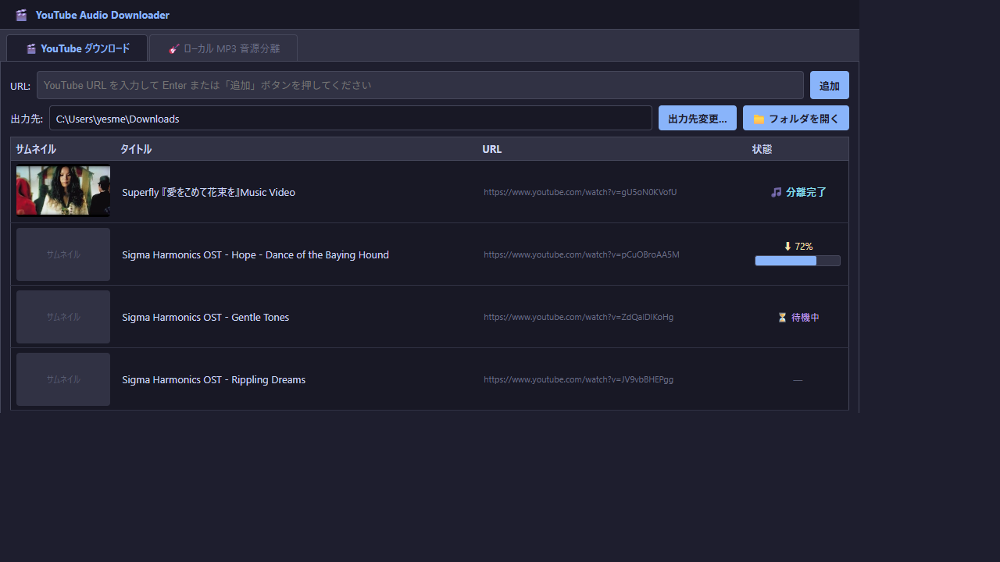
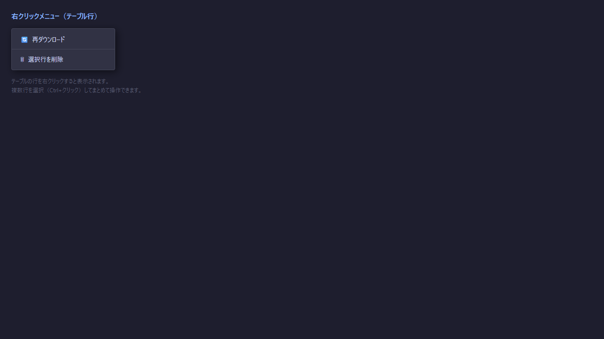
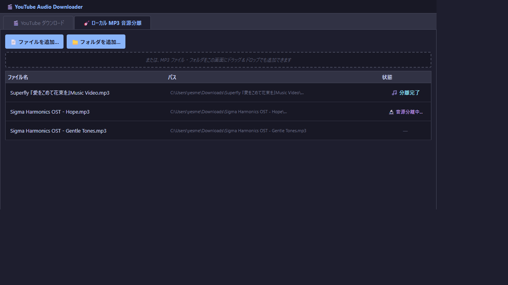
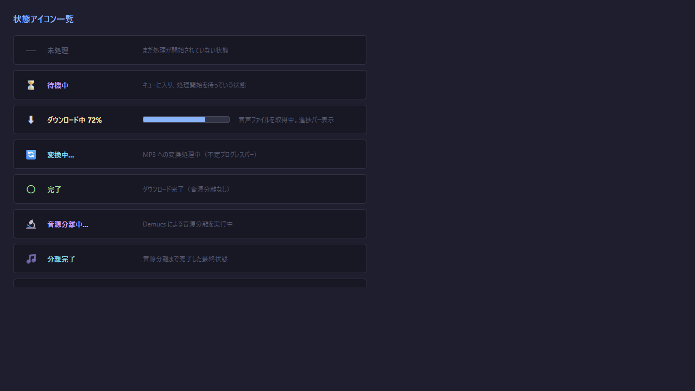
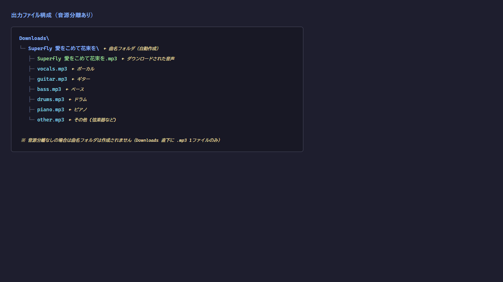

YouTube Audio Downloader
バージョン 1.0 | 対応 OS: Windows 10 / 11
1. 概要
YouTube Audio Downloader は、YouTube の動画から音声を MP3 ファイルとして保存し、 さらに AI（Demucs）を使って楽器ごとのトラックに音源分離できるツールです。
| 機能 | 説明 |
|---|---|
| YouTube MP3 ダウンロード | URL を貼り付けるだけで高品質 MP3 (192kbps) を保存 |
| YouTube MP4 ダウンロード | 映像付きの MP4 ファイルとしても保存可能 |
| AI 音源分離 | Vocal / Guitar / Bass / Drums / Piano / Other に分離（htdemucs_6s モデル） |
| ローカルファイル対応 | 手持ちの音声ファイルに対しても音源分離を実行 |
| 並列処理 | 最大 10 ファイルを同時にダウンロード・処理 |
| リスト自動保存 | ダウンロードリストは download_list.json に自動保存・復元 |
2. 起動方法
EXE ファイルで起動する場合
youtube_dl.exeをダブルクリックします。- 初回起動時に Windows Defender のポップアップが表示された場合は「詳細情報」→「実行」をクリックします。
- アプリのウィンドウが開きます。
Python スクリプトで起動する場合
cd youtube_dl python app.py
💡 必要な依存ライブラリ
pip install PySide6 "yt-dlp[default]" demucs pydub Pillowffmpeg が PATH に含まれているか、EXE 版では
ffmpeg.exe が同梱されている必要があります。
3. 画面構成

▲ アプリ起動直後の画面（YouTube ダウンロードタブ）
アプリは 2 つのタブ で構成されています。
| タブ | 用途 |
|---|---|
| 🎬 YouTube ダウンロード | YouTube URL からダウンロード＆音源分離 |
| 🎸 ローカル MP3 音源分離 | 手持ちの音声ファイルを音源分離のみ実行 |
4. YouTube ダウンロードタブ
4.1 URL を追加する
- 上部の URL 入力欄 に YouTube の URL をコピー＆ペーストします。
Enterキーを押すか、「追加」 ボタンをクリックします。- 自動的にタイトルとサムネイルが取得され、テーブルに行が追加されます。
⚠️ プレイリスト URL について
プレイリストの URL を追加した場合、先頭の 1 曲 のみ取得されます。
プレイリスト全体を一括ダウンロードしたい場合は、各動画の URL を個別に追加してください。
4.2 出力先フォルダを設定する
| ボタン | 動作 |
|---|---|
| 出力先変更... | フォルダ選択ダイアログを開く |
| 📁 フォルダを開く | 現在の出力先をエクスプローラーで開く |
4.3 音源分離オプションを設定する
テーブル下部の 「音源分離 — 抽出するパートを選択」 グループで設定します。
| チェックボックス | 抽出されるトラック |
|---|---|
| Vocal | ボーカル・歌声 |
| Guitar | ギター |
| Bass | ベース |
| Drums | ドラム |
| Piano | ピアノ |
| その他 | 上記以外（弦楽器・シンセ等） |
| 動画をダウンロード (MP4) | MP3 ではなく映像付き MP4 でダウンロード |
✅ パート選択と音源分離の関係
何も選択しない場合: 音源分離は行われず、MP3 ファイルのみ保存されます。チェックを入れた場合: ダウンロード完了後、選択したパートの音源分離が自動で実行されます。
並列数（右端のスピンボックス）で同時処理件数を 1〜10 の範囲で設定できます。
PC のスペックが低い場合は 1〜2 に下げることを推奨します。
4.4 ダウンロードを開始する
- 「▶ スタート」 ボタンをクリックします。
- 未ダウンロードのすべての URL が処理キューに入ります。
- ボタンが 「ダウンロード中... (完了数 / 合計)」 に変わり、進捗が表示されます。
- 全件完了するとボタンが戻り、操作可能になります。
4.5 右クリックメニュー

▲ テーブル行を右クリックすると表示されるメニュー
| メニュー | 動作 |
|---|---|
| 🔄 再ダウンロード | 選択行のダウンロードをリセットして再実行します |
| 🗑 選択行を削除 | 選択行をリストから削除します |
💡 複数行の選択
Ctrl + クリック で複数行を選択してから右クリックすると、まとめて操作できます。
処理中の行は削除・再ダウンロードの対象外になります。
5. ローカル MP3 音源分離タブ

▲ ローカル MP3 音源分離タブ
手持ちの音声ファイルを音源分離したい場合に使用します。YouTube からのダウンロードは行いません。
ファイル・フォルダの追加方法
| 方法 | 操作 |
|---|---|
| ファイル選択ダイアログ | 「📄 ファイルを追加...」 ボタン |
| フォルダ一括追加 | 「📁 フォルダを追加...」 ボタン（サブフォルダを再帰的に検索） |
| ドラッグ＆ドロップ | ファイルやフォルダを画面上にドロップ |
対応フォーマット:
.mp3 .wav .flac .ogg
.m4a .aac .opus .wma
分離スタートの手順
- 抽出したいパート（Vocal, Guitar, Bass, Drums, Piano, その他）にチェックを入れます。
- 出力先フォルダを確認・変更します。
- 「▶ 分離スタート」 ボタンをクリックします。
- すでに分離完了（🎵）のファイルはスキップされます。
⚠️ 初回実行時の注意
AI モデル（htdemucs_6s）を自動ダウンロードします（約 400MB）。
2 回目以降はキャッシュが使われるため高速に開始されます。
6. 状態アイコンの見方

▲ 状態アイコン一覧
| 表示 | 意味 |
|---|---|
| — 未処理 | まだ処理が開始されていない状態 |
| ⏳ 待機中 | キューに入り、処理開始を待っている |
| ⬇ XX% | ダウンロード中（進捗バー付き） |
| 🔄 変換中... | MP3 への変換処理中（不定プログレスバー） |
| 〇 完了 | ダウンロード完了（音源分離なし） |
| 🔬 音源分離中... | Demucs による音源分離を実行中 |
| 🎵 分離完了 | 全処理が完了した最終状態 |
| ✕ エラー | エラーが発生。クリックすると詳細ダイアログが表示されます |
7. 出力ファイルの構成

▲ 出力ファイル構成（音源分離あり）
音源分離あり（パートにチェック済み）
Downloads\
└─ 曲名\← 曲名のサブフォルダが自動作成
├─ 曲名.mp3← ダウンロードされた音声
├─ vocals.mp3← ボーカル
├─ guitar.mp3← ギター
├─ bass.mp3← ベース
├─ drums.mp3← ドラム
├─ piano.mp3← ピアノ
└─ other.mp3← その他（弦楽器・シンセ等）
└─ 曲名\← 曲名のサブフォルダが自動作成
├─ 曲名.mp3← ダウンロードされた音声
├─ vocals.mp3← ボーカル
├─ guitar.mp3← ギター
├─ bass.mp3← ベース
├─ drums.mp3← ドラム
├─ piano.mp3← ピアノ
└─ other.mp3← その他（弦楽器・シンセ等）
音源分離なし（パート未選択）
Downloads\
└─ 曲名.mp3← サブフォルダなし、直下に保存
└─ 曲名.mp3← サブフォルダなし、直下に保存
動画をダウンロード (MP4) チェックあり
Downloads\
└─ 曲名\
├─ 曲名.mp4← 映像付き動画
└─ 曲名.mp3← 映像から抽出した音声
└─ 曲名\
├─ 曲名.mp4← 映像付き動画
└─ 曲名.mp3← 映像から抽出した音声
💡 ローカル音源分離の出力先
ローカルタブで分離した場合、出力先フォルダ / ファイル名（拡張子なし）/ というサブフォルダが作成され、その中に各 stem の MP3 が保存されます。
8. よくある質問
ダウンロードが「エラー」になる
YouTube 側のレート制限や動画の地域制限が原因の場合があります。
しばらく待ってから右クリック →「🔄 再ダウンロード」で再試行してください。
ソースから実行している場合は、次のコマンドでアップデートしてください。
HTTP Error 403: Forbidden と表示される場合は、同梱の yt-dlp が古くなっている可能性が高いです。
EXE 版は、メニューの ヘルプ → アップデートを確認... から最新版に更新してください（アップデート機能を含む版以降）。それより古い版は、リポジトリ直下で .\setup.ps1 を再実行して入れ替えてください。ソースから実行している場合は、次のコマンドでアップデートしてください。
pip install -U "yt-dlp[default]"Node.js（または Deno）がインストールされていると、YouTube の解析がより安定します。
音源分離がとても遅い
初回: AI モデルのダウンロード（約 400MB）が必要です。
GPU なし PC: CPU 処理となるため 1 曲あたり数分〜十数分かかる場合があります。 「並列数」を
GPU あり PC: CUDA 対応の PyTorch が入っていれば自動で GPU が使用されます。
GPU なし PC: CPU 処理となるため 1 曲あたり数分〜十数分かかる場合があります。 「並列数」を
1 に下げると安定して処理できます。GPU あり PC: CUDA 対応の PyTorch が入っていれば自動で GPU が使用されます。
リストを閉じたら消えてしまった
ダウンロードリストは
download_list.json に自動保存されます。
アプリを再起動すると前回のリストが復元されます。
download_list.json は EXE / app.py と同じフォルダに作成されます。
モデルのキャッシュはどこに保存される？
EXE 版:
開発版 (app.py):
ファイル名は
<EXE と同じフォルダ>\models\hub\checkpoints\開発版 (app.py):
youtube_dl\models\hub\checkpoints\ファイル名は
*.th 形式です。初回以降は再ダウンロードされません。
プレイリスト全体をまとめてダウンロードしたい
現バージョンではプレイリスト URL を追加した場合、先頭の 1 曲のみ取得されます。
プレイリスト内の各動画 URL を個別に追加して対応してください。
追加できる URL の上限は？
1 リストあたり最大 1000 件まで登録できます。上限を超えた場合、古いエントリが自動的に削除されます。
9. アップデート
EXE 版と macOS 版は、GitHub にある新しいバージョンをアプリから確認し、自動で更新できます。
- メニューバーの ヘルプ → アップデートを確認... を選びます。
- 新しいバージョンがあれば「ダウンロードして、アプリを再起動しアップデートを適用しますか？」と表示されるので、はい を選びます。
- ダウンロードが終わると、アプリが自動で終了し、新しいバージョンとして再起動します。ダウンロードリストやモデルのデータは引き継がれます。
注意事項
- 確認とダウンロードには GitHub CLI (
gh) が必要です。公式サイトからインストールし、gh auth loginでログインしてください。 - ダウンロードや音源分離の処理中はアップデートを適用しません。処理が終わってから、もう一度お試しください。
- 現在のバージョンは ヘルプ → バージョン情報 で確認できます。
- ソースコードから実行している場合、自動アップデートは利用できません。
YouTube Audio Downloader マニュアル — 2026年5月